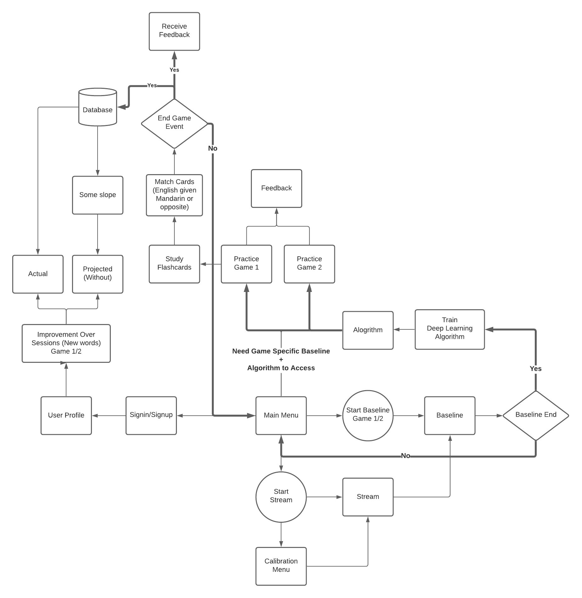

Koalacademy

We are developing the world's first language learning platform optimized to directly utilize brain waves. Our project leverages the subsequent memory effect, or the fact that memory outcomes (i.e. whether something will be remembered or forgotten) can be predicted based on brain activity during attempted memory encoding. Accordingly, we plan to develop a language learning game which will provide real-time feedback to users on whether the encoding of a given translation is likely to be successful or not. Initially, we will focus on Mandarin acquisition for English speakers because of the inherent difficulty involved in learning this language. We are aiming to reduce individual barriers in learning this complex but highly relevant language. We also plan to host our application on a remote web server, allowing open access to any users with the requisite hardware. Altogether, we aim to demonstrate the power of commercial BCIs in allowing average consumers to develop practical life skills in an efficient and engaging manner.
We take advantage of the subsequent memory effect (SME) which refers to the difference in brain activity between individuals studying items they will later remember and studying items they will later forget. Regarding EEG data, the study of items that will be remembered later is characterized by increased voltage readings over frontal and parietal regions following item presentation, as well as increased spectral power in bands such as theta. Here, we plan to leverage the power of deep machine learning models to exploit the intricacies of the SME beyond voltage and power readings. In particular, we will apply these models while individuals attempt to learn the “items” involved in learning a new language (such as characters or translations) with the goal of providing a real-time assessment of whether the study period was successful and whether it is likely that the individual will remember the item they are currently studying.
In addition to offering feedback at the end of a given learning session (English to Mandarin association, and vice versa), we will offer users stats on their learning across multiple sessions via a profile dashboard as they progress in their learning, which in this case will be increasingly complex Mandarin characters Users can get a sense of their progress at a glance and will be provided a summary of the characters that they need to study more.

This project will culminate in a fully functioning, free to use, web-based game. We expect our project to garner significant media attention given the broad coverage of our first project, AlphaBlaster, in 2019. This will be accomplished by reaching out both within the University of Alberta community as well as the broader Edmonton community. We will also share our project internally throughout the University of Alberta and the University of Calgary. Most importantly, we also plan to submit our project to the 2021 iteration of the NeuroTechX Open Competition, an international undergraduate neurotechnology design contest!

|

|

|

|

|
||||
|---|---|---|---|---|---|---|---|---|
| Eden Redman | Landon Fuhr | Harrison Fah | Cameron Hildebrandt | Matthew Danyluk | Nicole Wlastiz | Dania Villarreal | Ben Wang | Tanyaradzwa Gozhora |
| Team Lead - BA, Fine Arts and Design | Senior Full Stack Developer - BSc, Physiology | Senior Full Stack Developer BSc, Computer Science | Senior Front End Developer - BSc, Computer Science | Data Analyst - BSc, Neuroscience | Junior Front End Developer - BA, Psychology | Front End Developer - BSc, Neuroscience | Full Stack Developer - BSc, Computer Science | Junior Front End Developer - BSc, Computer Science |